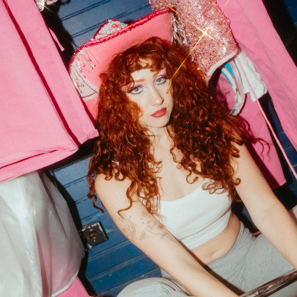

Navegación

Chappell Roan, cuyo nombre real es Kayleigh Rose Amstutz, nació en la pequeña y conservadora ciudad de Willard, Missouri, el 19 de febrero de 1998. Es la hija mayor de Kara y Dwight Amstutz, quienes dirigen una clínica veterinaria en la cercana Springfield, y se crió con tres hermanos, incluida una hermana, cuyos nombres no se han hecho públicos.
Su educación fue muy religiosa. Asistía a la iglesia tres veces por semana y pasaba los veranos en campamentos juveniles cristianos. Roan, que es lesbiana, creció sintiéndose muy diferente, describiendo su infancia como muy depresiva. «Me diagnosticaron trastorno bipolar a los 22 años, pero de niña, creo que mis padres simplemente pensaban que era una niña mimada, así que lo pasé muy mal», declaró a Variety en septiembre de 2023.
Durante su infancia, Roan practicaba manualidades y atletismo , pero encontró mayor consuelo en la música, a la que sus padres apoyaron incondicionalmente. Empezó a tomar clases de piano a los 12 años y poco después comenzó a cantar en público, ganando su primer concurso de talentos en octavo grado. A los 13 años, esta cantante autodidacta ya componía sus propias canciones, inspirándose en una variedad de influencias musicales, como Stevie Nicks , Karen Carpenter, Lady Gaga y Lana Del Rey . Al año siguiente, audicionó para America's Got Talent . Al no tener éxito, comenzó a subir versiones de canciones a YouTube.
A pesar de su talento musical, Roan originalmente quería ser actriz desde pequeña. Tomó clases de actuación en la escuela secundaria y planeaba usar la música para abrirse camino en la industria. Pero más tarde, Roan abandonó ese sueño.
A los 16 años, Roan compuso la canción "Die Young" y la interpretó en público por primera vez en un festival de otoño en Missouri. Poco después, comenzó a presentársela a ejecutivos discográficos en Nueva York y Los Ángeles. Para dedicarse a la música a tiempo completo, Roan se graduó de la preparatoria Willard un año antes de lo previsto, cursando clases en línea en la Universidad Brigham Young para obtener los créditos necesarios para su diploma.
El esfuerzo de Roan dio sus frutos en 2015 cuando, con tan solo 17 años, firmó con Atlantic Records. Fue entonces cuando la cantante adoptó su nombre artístico en honor a su difunto abuelo, Dennis Chappell, cuya canción favorita era "The Strawberry Roan" de Marty Robbins.
Roan, que seguía viviendo en Missouri, viajaba constantemente entre Los Ángeles y Nueva York para trabajar en su primer EP, School Nights , que se publicó en septiembre de 2017. La lista de canciones, oscura y melancólica, incluía "Die Young", además de otros cuatro temas.
En 2018, Roan se mudó a Los Ángeles, donde comenzó a vivir abiertamente como mujer queer. Esto lo cambió todo para ella, tanto a nivel personal como profesional. «Aquí me siento libre de ser quien quiero ser», declaró en una entrevista con Rolling Stone en octubre de 2022. Más tarde, ese mismo año, Roan empezó a trabajar con el compositor y productor Dan Nigro para crear canciones pop más animadas. Juntos produjeron el tema «Pink Pony Club», inspirado en la primera visita de Roan a The Abbey, un bar gay en West Hollywood. Si bien la canción tuvo buena acogida, no generó grandes ganancias de inmediato y, posteriormente, su discográfica rescindió su contrato.

Tras ser despedida de Atlantic Records, Chappell Roan comenzó a reinventar su carrera en 2021.
Roan volvió a vivir con sus padres durante los primeros meses de la pandemia de COVID-19 antes de regresar a Los Ángeles en 2021. Le contó a la revista Paper que se dio un año para consolidarse como artista independiente antes de retirarse. Ese verano, "Pink Pony Club" finalmente alcanzó el éxito que merecía, volviéndose viral en TikTok e Instagram. Para el otoño, se había reunido con Nigro y había renovado su música y su imagen.
En febrero de 2022, lanzó el tema abiertamente queer "Naked in Manhattan", seguido meses después por la canción de venganza "My Kink is Karma". Las nuevas canciones y sus respectivos videoclips, autofinanciados, enfatizaron su identidad queer y su nueva imagen inspirada en el drag, lo que atrajo aún más atención en las redes sociales.
Su perseverancia como artista independiente la llevó a firmar otro contrato discográfico. Esta vez, Roan firmó con Nigro's Amusement Records, un sello de Island Records, en mayo de 2023. Ese verano, creó un baile viral en TikTok para su canción "Hot To Go!", lanzada en agosto de 2023. Su video tutorial ha acumulado más de 6 millones de reproducciones en YouTube.

En septiembre de 2023, Roan lanzó su esperado álbum debut, The Rise and Fall of a Midwest Princess . El álbum recibió críticas positivas tanto de la crítica especializada como del público por sus pegadizos temas synth-pop y su audaz representación de la identidad queer. Al mes siguiente, Roan fue nombrada una de las 10 artistas emergentes más destacadas por Billboard .
El álbum de la cantante y su presencia como artista despegaron a principios de 2024, tras su debut en el programa nocturno The Late Show With Stephen Colbert en febrero. Ese mismo mes, comenzó a ser telonera de Olivia Rodrigo en su gira mundial GUTS y ofreció conciertos en Estados Unidos y Canadá. Durante la gira, en la que Roan participó durante dos meses, la intérprete de "Pink Pony Club" actuó en la serie Tiny Desk Concert de NPR en marzo de ese año.

Sus actuaciones en festivales de música como Coachella y Gov Ball en 2024 catapultaron a Chappell Roan al estrellato.
En septiembre de 2024, Roan ganó el premio a Mejor Artista Revelación en los MTV Video Music Awards de 2024 y dedicó su victoria a los artistas drag y a la comunidad LGBTQ+ en general. «Para todos los jóvenes queer del Medio Oeste que me están viendo ahora mismo, los veo, los entiendo, porque soy una de ustedes», dijo en su discurso de aceptación . «Y nunca dejen que nadie les diga que no pueden ser exactamente quienes quieren ser».
La cantante debutó en Saturday Night Live como invitada musical en noviembre de 2024. Ese mismo mes, Roan recibió sus primeras nominaciones a los premios Grammy. La nominada a Mejor Artista Revelación también fue nominada a Álbum del Año y Mejor Álbum Vocal Pop por Midwest Princess , además de Canción del Año, Grabación del Año y Mejor Interpretación Pop Solista por “Good Luck, Babe!”.